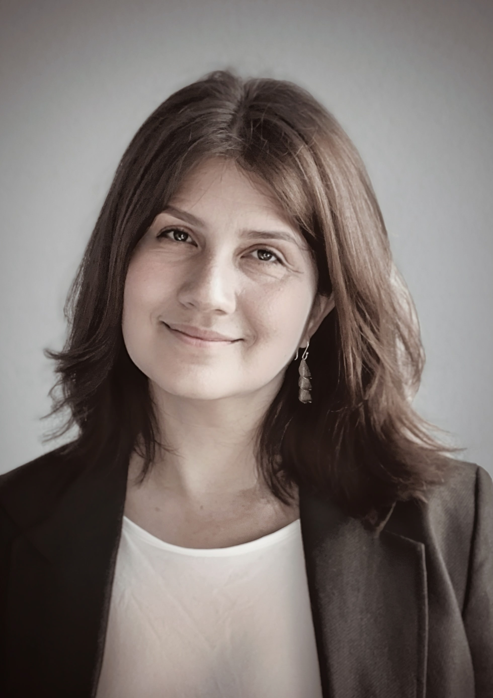

01
Leadership
We work with leaders to transform the inner armour that once protected them, enabling them to meet themselves and others with clarity and relational capacity.
From Disrupted History to Grounding Coherence
Why
Across the world, islands carry both deep wisdom and deep wounds.
Histories of colonialism, displacement, and environmental degradation have left lasting impacts on leadership structures, community relationships, and the connection between people and their ecosystem — air, land and water.
Yet, islands hold profound ancestral knowledge, cultural resilience, and practices that offer powerful pathways for healing and regeneration.
Our Approach
What We Do
We work with leaders to transform the inner armour that once protected them, enabling them to meet themselves and others with clarity and relational capacity.
We support governance processes rooted in deep listening — to people, land, and ancestors — renewing how decisions are made.
We create spaces to acknowledge the pain of history, not to remain there, but to restore freedom and responsibility.
We work with the intelligence of ecosystems and ancestral knowledge, helping systems recognise barriers and restore flow.
We guide the shift from collective trauma to collective agency, by recognising patterns and activating the human capacities within networks.
How We Work
We guide leaders, communities, and organisations into new ways of being, grounded in systems awareness and the intelligence of the islands.
MARJADI KOOISTRA is a governance architect, ocean advocate, facilitator, and executive coach whose work connects inner transformation with systemic renewal. With a background in corporate and institutional environments, she brings extensive experience in finance, multi-stakeholder and leadership development. Rooted in her island Indonesian lineage, she is committed to restoring balance between people, capital, and the living world. She designs governance structures for regenerative initiatives while facilitating spaces where individuals and communities reconnect with identity beyond conditioning, complexity, and inherited patterns. Her work supports restoration that begins within and unfolds through how systems organise, collaborate, and steward ecosystems.

VIVIANNA RODRIGUEZ CARREON is an interdisciplinary social scientist and consultant whose work focuses on collective trauma, agency, and systemic transformation. With a background in academia, she integrates scholarship on inner development and sustainable leadership with research-informed facilitation processes that support communities navigating conflict, migration, and structural inequality. Through international collaborations and collective integration labs, she advances approaches to collective healing that honour cultural context, lived experience, and relational capacity. Rooted in the mountains of Peru, her work bridges academic research and practice to strengthen communal resilience, governance, and long-term social transformation.
We work with leaders, communities, and organisations to heal systemic fragmentation and restore coherence.
“A shell before it speaks. So do we, to history, to land, to communities, and to the future we are co-creating together.”
Connect